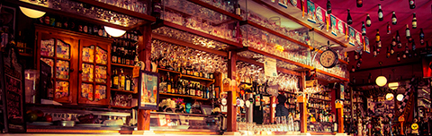

<section id="searchSection">
    <picture>         
        <source srcset="../images/beerflix.jpg" media="(min-width: 1280px)">
        <source srcset="../images/beerflix-hires.jpg" media="(min-width: 1024px)">            
        <source srcset="../images/beerflix-tablet.jpg" media="(min-width: 780px)">  
        <source srcset="../images/beerflix-500.jpg" media="(min-width: 480px)"> 
        
    </picture>
    <div class="filter">
        <form id="search" class="filter-input">
            <input placeholder="Search your beer" class="input beer" type="text"><input placeholder="Year" class="input year" type="text"><button type="submit" class="button search"><i class="fas fa-beer"></i><span>Search</span></button>
        </form>
    </div>    
</section>